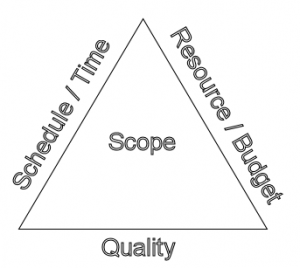

Projektmanagement
Die WCE UG betreut und koordiniert im Rahmen des Projektmanagements / der Projektleitung folgende Fachgebiete
- Verfahrenstechnik
- Maschinen & Apparate
- CAD-Bearbeitung
- EMSR-Technik
- Stahl-, Massiv- und Verkehrswegebau
- Statik
- Behördenengineering
- HAZOP / FMEA
Typische in Abstimmung mit den Fachbereichen erstellte Dokumente sind beispielsweise
- Monatsbericht
- Terminplan
- Kostenschätzung
- Kosten-/ Beschaffungsplan
- Protokolle
Nachfolgend ein wenig Theorie zum Projektmanagement:
Projektmanagement ist die Anwendung von bewährten Methoden und erworbenen Kenntnissen unter Nutzung von angepassten Werkzeugen, um die angestrebten Projektziele zu erreichen.
Dabei wird wesentliches Augenmerk auf das Spannungsdreick aus Kosten, Termin und Qualität gelegt.
Damit ist auch klargestellt, dass nur diejenigen Methoden und Werkzeuge Anwendung finden, die sinnvollerweise auf die jeweilige Projektgröße anzuwenden sind. Projektmanagement ist kein Selbstzweck, sondern dient der Projektzielerreichung unter Einsatz angepasster Mittel.
Bei der WCE UG existieren seit 1990 Erfahrungen in der Projektleitung und Projektmanagement von Anlagenbauprojekten zwischen 0,5 und über 30 Mio. Eur TIC. Beispiele sind unter Ausgeführte Projekte zu finden.